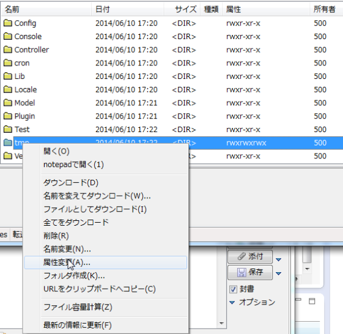
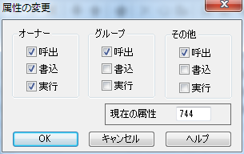
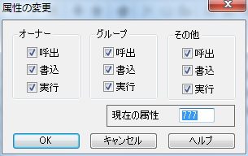

WEBルートを取得
WEBルートでパス指定すると、動的な階層のページから、別のページに遷移できるので便利。「../」などの相対パスではなく、絶対パスで指定可能である。
$editUrl=$this->Html->webroot.'rec?id='.$ent['id'];
echo "< input type='button' value= '編集' onclick=\"location.href='{$editUrl}'\" />";
出力
< input type='button' value= '編集' onclick="location.href='/nogyo2/rec?id=987'" />
サニタイズで変換された改行文字を元に戻す。
SQLインジェクション対策およびXSS対策でサニタイズされてしまった改行コードを元に戻す方法。
//XSS対策でサニタイズされた改行コードを元に戻す。
$v = str_replace ('\\r\\n', "\r\n", $v);
//SQLインジェクション対策でサニタイズされた改行コードを元に戻す。
$v = str_replace ('\\\r\\\n', "\r\n", $v);
別のアクションに遷移する方法
同コントロール内であれば別のアクションにリダイレクトせずに画面遷移できる。
public function index(){
$this->setAction('dummy');//dummyアクションに遷移する。
}
public function dummy(){
}
参照元
JavaScriptファイルやCSSファイルをインポートする（組み込む）
webrootのjsフォルダ内に外部JSファイルを配置する。xxx.jsを配置する場合→ app/webroot/js/xxx.js
View（ctpファイル）の先頭あたりに以下のコードを記述する。
下記はneko.jsとyagi.jsをインポートする例。
$this->assign('script', $this->Html->script(array('neko','yagi')));
別の方法
echo $this->Html->script('xxx', array('inline' => false));
「app/View/Layouts/default.ctp」のheadタグ内に以下のコードを記述。
<?php echo $this->fetch('script'); ?>
※フォルダ分けしたい場合。
例：app/webroot/js/Neko/index.js
echo $this->Html->script('Neko/index', array('inline' => false));
CSSファイルをインポートする場合 「app\webroot\css\Test\xxx.css」をインポートする例
$this->assign('css', $this->Html->css(array('Test/xxx.css')));
HTMLとしてのコード出力はdefault.ctpの「$this->fetch('css');」で出力されている模様。未確認。
default.ctp → echo $this->fetch('css');
GETからパラメータを受け取る
コントローラーにてGETからパラメータを受け取る場合、「$this->params['url']['xxx'];」で受け取れる。GET用にクエリ２つ（testとtest2）を付加したURL
http://localhost/animal/cat_list/?test=4&test2=2
コントローラーのアクション内にて、GETでパラメータ（クエリ）を取得する。
$test=$this->params['url']['test'];
$test2=$this->params['url']['test2'];
デプロイ：書込権限に関するエラー：「tmp」まわりのエラー
サーバー側で書込権限がないときの起こるエラーです。パーミッションを設定することでエラーを回避できます。
パーミッションの設定はFFFTPなどで設定可能です。
FFFTPを立ち上げ、サーバー側（右側）ウィンドウのフォルダやファイルを右クリックし、属性変更を選択。

書込権限がない場合、以下のようになっているはず。

書込にチェックを入れてOKを押す。「実行」もチェックを入れたが必要ないかも。

デプロイ：DBアクセスのエラー：「SQLSTATE[28000] [1045] Access denied for user ...」
ホストやログイン名、パスワードが合っているのにシステム側からDBにアクセスできない場合、 MySQL側での設定に問題があることがあります。phpMyAdminを使っている場合、「特権」をいろいろ修正することにより治せるかもしれません。
参考サイト
パスワードを暗号化する
$password = 'test'; $ango=$this->Auth->password($password);//パスワードを暗号化する。
ルートパスの取得方法（絶対パスの取得）
「$this->webroot;」を使う。例えば処理画面のURLが「http://localhost/sample/aaa/bbb/ccc」と深い階層化にある場合でも、「/sample/」の部分を返す。
コントローラーでの書き方
$path=$this->webroot;
ビュー(ctp)での書き方
$path=$this->Html->webroot; //もしくは・・・ $path=$this->Form->webroot;
SQLをそのまま実行する
SQL文を直接実行する方法は以下の通り。SELECTだけでなく、UPDATE,INSERT,DELETEも可能。
$data=$this->Xxx->query("SELECT * FROM `tests` WHERE test_name LIKE 'テスト%'");
デバッグ：トレース
echo Debugger::trace();
コントローラでモデルを使わない設定
コントローラにvar $uses = false;をメンバとして追加するだけ。
class TestMultiSelectController extends AppController {
public $name = 'TestMultiSelect';
var $uses = false;//★モデルを使わない。
Cakeのマルチセレクト（select 複数選択）
ビュー index.ctp
<?php
echo $this->Form->create('TestMultiSelect', array('url' => '#'));
//選択肢一覧
$sels = array('1' => 'ネコ', '2' => 'ネズミ', '3' => 'ウシ', '4' => 'トラ','5'=>'カニ','6'=>'カラス','7'=>'アグー');
//選択値 ※未選択にする場合はnullをセット
$ary=array('2','3','6');
//マルチセレクトを作成
echo $this->Form->input('test_list', array('type' => 'select',
'options' => $sels, 'multiple' => true,
'size' => 4, 'value' => $ary));
echo $this->Form->submit('サブミット');
echo $this->Form->end();
?>
コントローラ
App::uses('AppController', 'Controller');
class TestMultiSelectController extends AppController {
public $name = 'TestMultiSelect';
var $uses = false;
public function index() {
//サブミットからデータを取得する。
if(isset($this->data['TestMultiSelect']['test_list'])){
Debugger::dump($this->data['TestMultiSelect']['test_list']);
}
}
}
ログインできない場合(Cake2.4)
Authを利用したログインができない場合があるようである。原因の一つにCake2.3で開発されたシステムをCake2.4で動かすとログインできない。
パスワード※の暗号化方法が変わったことにあるらしい。
※AuthのログインはまずユーザーIDでUserテーブル（任意で指定可）からレコードを取得し、
レコードのパスワードを暗号化して比較するようである。
参照サイト
シェルを動かす
シェルは長い処理（バッチ処理）を内部で実行するときや、 定期的に指定時刻に自動実行する処理（Cron）などに使う。サーバー側や開発環境ではコンソール（コマンドプロンプト）から動かすことができる。
今回はブラウザでシェルを動かす方法を以下に示す。
方法はコントローラを通してシェルを動かすやり方。
シェルはAppShellを継承したクラスである。
mainメソッドを用意するのがマナー。
app/Console/Commandディレクトリにシェルクラスを作る。
class MyShell extends AppShell {
public function main() {
echo 'Shell Hello world!';
$this -> out( "Shell Hello world!");
}
}
コントローラではAppShellとMyShellをインポートする。
あとは普通のクラスと同様。
App::uses('AppController', 'Controller');
App::uses('AppShell','Console/Command');
App::uses('MyShell','Console/Command');
/**
* シェルを動かす
* ☆履歴
* 2014/8/22 新規作成
* @author k-uehara
*
*/
class TestShellController extends AppController {
public $name = 'TestShell';
public $uses=null;//モデルを使わない。
public function index() {
$shell = new MyShell();
$shell->initialize();//シェルの初期化。シェル内のusesなどの処理
$shell->main();//★シェル実行
}
}
テスト
特定の画面をホームにする方法
NekoControllerの画面をホームにする場合、routes.phpを以下のように設定。app/Config/routes.php
Router::connect('/', array('controller' => 'neko', 'action' => 'index'));
パンくずリストの記述法
パンくずリストはビューに記述する場合、addCrumbヘルパーメソッドを使えばよい。リンク化させないようにする場合はaddCrumbメソッドの第2引数を省略すればよい。
<?php
$this->Html->addCrumb("ホーム", "/main");
$this->Html->addCrumb("猫", "/neko");
$this->Html->addCrumb("サンプルパンくず");
echo $this->Html->getCrumbs(" > ");
?>
サンプル
saveとsaveAllの違い
- saveAllは複数レコードを一括保存するときに。
- saveは一つのレコードを保存するときに。
UPDATEとINSERT
saveAll,saveどちらも、idをセットすればUPDATE文の処理を行い、idが未セットならINSERT文の処理を行う。ループしながらsaveを連続して呼び出すときの注意
saveを連続して呼び出すと不具合が生じる。ループしながら連続してsave()を呼び出す場合は、create()メソッドも呼び出すこと。
参考
saveAllのサンプル（トランザクション用）
$this->begin();//トランザクション開始
try {
$rs=$this->saveAll($data, array('atomic' => false,'validate'=>false));
//...他の保存処理・・・
$this->commit();//コミット
} catch (Exception $e) {
$this->rollback();//ロールバック
throw $e;
}
saveのサンプル
$rs = $this->save($ent, array('atomic' => false,'validate'=>'false'));
オプションの説明
| atomic | true:トランザクション自動化 , false:トランザクション手動（begin～commitではさむ） |
| validate | true:バリデーション有効 , false:バリデーション無効 |
DB保存に失敗する場合
validate属性がtrueになっていると、バリデーションに引っかかり、保存されないことがある。$rs = $this->save($ent, array('atomic' => false,'validate'=>'true'));
この場合、validate属性をfalseにするか、バリデーションまわりの修正を行うこと。アソシエーション
saveAllはアソシエーションデータを保存することもできるようである。アソシエーションデータは複数のモデルを結合したデータのようで、JOINによるテーブル結合と似ている。
ただ、アソシエーションデータは考えて使わないとすごく遅い処理になるので注意が必要である。
DB保存関連は他にsaveManyやsaveAssociatedがあるが、いずれもsaveAllの内部に組み込まれている。
Cakephpのファイルアップロード
Cakeのファイルアップロードも基本的な仕組みはプレーンなPHPと同じである。ただCakeはバリデーションが便利。
ファイルサイズチェックやファイルの種類チェックが容易である。
サンプル
コントローラ：TestFileuploadController.php
class TestFileuploadController extends AppController {
public $name = 'TestFileupload';
public $uses=array('TestFileupload');
public function index() {
$img_fn=null;
//UPLOADボタンが押されたとき、以下の処理を行う。
if ($this->request->is('post')) {
//バリデーション（ファイルの種類や、ファイルサイズのチェック）
$this->TestFileupload->set($this->request->data['Neko']);
if ($this->TestFileupload->validates($this->request->data['Neko'])){
//アップロード画像ファイル情報を取得
$image = $this->request->data['Neko']['smp_img'];
//アップロードする画像ファイルの名前を指定する。
$img_fn="img/TestFileupload/sample.jpg";
//一時ファイルからコピー
move_uploaded_file($image['tmp_name'], $img_fn);
}else{
$errors=$this->TestFileupload->validationErrors;//入力チェックエラー情報を取得
Debugger::dump($errors);
}
}
$this->set(array(
'img_fn'=> $img_fn,
));
}
}
モデル：TestFileupload.php
App::uses('Model', 'Model');
class TestFileupload extends Model {
var $name='TestFileupload';
public $useTable = false;//テーブルを使わない
//バリデーション
public $validate = array(
'smp_img'=>array(
'exten' => array(
//拡張子チェック
'rule' => array('extension',array('jpg','jpeg','png')),
'message' => 'jpg,jpeg,png以外のファイルはアップロードできません',
'allowEmpty' => true,
),
'img_size' => array(
//画像サイズ制限
'rule' => array('fileSize', '<=', '1000000'),
'message' => '画像サイズは1MBまでです',
)
),
);
}
ビュー：index.ctp
<h1>Cakephpでのファイルアップロード</h1>
<?php echo $this->Form->create('Neko', array('type'=>'file', 'enctype' => 'multipart/form-data'));?>
<?php echo $this->Form->input('smp_img', array('label' => false, 'type' => 'file', 'multiple'));?>
<?php echo $this->Form->submit('UPLOAD');?>
<?php echo $this->Form->end() ?>
<div>
<img src="<?php echo $img_fn?>" />
</div>
トランザクション
複数のテーブルを更新する場合におけるトランザクションの応用例。更新処理にはINSERT,UPDATE,DELETEの3種類がある。
begin～commit内に別モデルの更新処理が含まれていても、同一のトランザクションと見なされる。
保存にはsaveAll()を使い、属性にatomic=>falseを指定
ソースコードその1 検証中・・・saveメソッドでもトランザクションはできるなど調べる必要あり
$this->Neko->begin();//トランザクション開始
//INSERT,UPDATE,DELETEの更新処理。saveAllメソッドでは「'atomic' => false」を指定する。省略可能？
$rs=$this->Neko->saveAll($dataA, array('atomic' => false,'validate'=>'true'));
if($rs==false){$this->Neko->rollback();return false;}
//別テーブルのINSERT,UPDATE,DELETEの更新処理。
$rs=$this->Yagi->saveAll($dataB, array('atomic' => false,'validate'=>'true'));
if($rs==false){$this->Neko->rollback();return false;}
$this->Neko->commit();//コミット
ソースコードその2
class Animal extends Model {
function saveAnimal($data,$option){
$this->begin();//トランザクション開始
//テーブルAへ更新処理（INSERT,UPDATE,DELETE)
$rs=$this->saveA($dataA);
if($rs==false){
$this->rollback();
return false;
}
//別モデルの更新処理もトランザクションの適用域に含まれる。
$rs=$this->Food->saveB($dataB);
if($rs==false){
$this->rollback();
return false;
}
$this->commit();//コミット
return true;
}
}
ソースコードその3
$dataSource = $this->TestHasManyA->getDataSource();
$dataSource->begin();
$this->TestHasManyA->saveAll($this->request->data['TestHasManyA'],array('atomic'=>false));
$errors=$this->TestHasManyA->validationErrors;//バリデーションによる入力エラー情報を取得
//別モデルの保存処理も、コミット、ロールバックの対象となる。
if (empty($errors)) {
$dataSource->commit();//コミット
} else {
$dataSource->rollback();//ロールバック
}